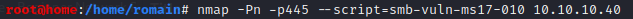

Hack The Box Blue 10.10.10.40 : https://www.hackthebox.eu/home/machines/profile/51
- nmap -T4 -p- 10.10.10.40
- nmap -A -T4 -p135,139,445 10.10.10.40
- port 139 + 445
- netbios + smb
=> MS17-010 Eternalblue
If smb is open, is it vulnerable or exploitable by MS17-010 ?
- nmap -Pn -p445 --script=smb-vuln-ms17-010 10.10.10.40- 
-